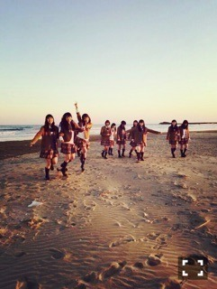
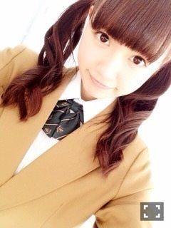
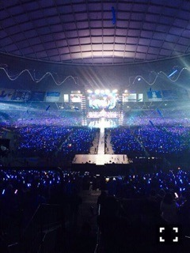
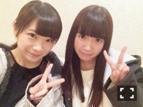
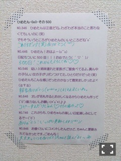
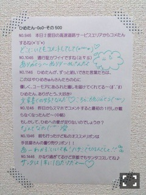
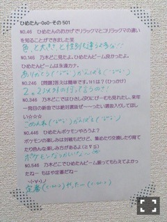

| 2015/02 28 Sat | ひめたん-OoO-その524 |
前回の日記にたくさんのコメント
本当にありがとうございました
実はまだ読んでいる途中で
最後まで追いついていないけれど
明日中には全部読みます
それくらい大切に読んでいます＊
たくさんの方に祝福してもらえて
私は幸せ者だなって思ったし
改めて背中を押されました！
私はきっとプレッシャーに強いタイプ。
強気なことを言って追い込むことで
自分を奮い立たせる人です、多分。
だから、少々無理してでも
言ってしまおう
どうぞ11th期待しててください！
メンバーがブログに書いてくれた
ことも全部嬉しかった......
やはりメンバーの支えあっての私です。
そして私もみんなの力になりたいなあ
ジャケ写公開されました～


それでは遅くなりましたが
ライブの報告しますね（＾ω＾）
西武ドームへお越しになったみなさん
スカパー！をご覧になったみなさん
ありがとうございました！
書きたいことはたくさんあるけれど
収まらない文章になりそうだな
今回はとりあえず
個人的なライブの見所だけ
おさらいしようかな。
もちろん本編もがんばったけど
私が一番緊張したのが
乃木團のバンド演奏。
休憩中もなんかあるかも～なんて
ちょっと前の日記で
ボソッと呟いておいたんだけど
気づいくれたかな？笑
そう、今回BDライブのために
10ヶ月ぶりの再結成を
果たしました！
乃木團は終わっていなかった！
みんなこの日のために
練習がんばったんです∠( 'ω')／
愛未ちゃんとは
「コウモリよ」「やさしさとは」の
ユニット曲でも
2人のパートになることが多くて
今回もツインボーカル♡
私が足を引っ張ってしまって
いつも申し訳ないなと思いつつ
また一緒に歌えるなんて( ˇωˇ )
バンドのみんなとも
こうして演奏できてよかったです♡
寒かったり時間がなかったりした中で
一生懸命練習してて
私も頑張らなきゃって刺激を受ける
メンバーばかりです乃木團。
乃木團のステージは2回目でありながら
実は乃木坂ちゃんのホームで
演奏するのははじめて。
だからこうした形で
みなさんに聴いてもらえて
よかったなあ～＊
また演奏したいなあ
乃木團の次のステージを
楽しみにしててくださいねっ
それから
「何度目の青空か？」のサプライズ
びっくりしました！
うは～きれい～って
うるうるしそうになって
ふとちーちゃん見たら号泣してて
それを見て私も感極まっちゃったよ。
長い時間みてくださって
それだけで十分嬉しいのに
さらにサプライズなんてズルいよね～
本当に乃木坂ファミリーのみなさんは
あたたかいなって感じました
ありがとうございました(´,,•ω•,,｀)
あとは、せいたんにとっては
最後のステージだったんだよね
最後のMCでせいたんが
喋ってるの聞いてたら
なんか寂しくなっちゃって。
普段のせいたんとライブのせいたん
ちょっとギャップがあって
私はどっちのせいたんも好き♡
BDライブのせいたんも
きらきらしてて
やっぱりステキでした＊
卒業まではまだ時間がある！
一緒に活動がんばろうね、せいたん。
そんなわけで3周年迎えました
4年目もがんばります！
これからも応援よろしくね\( ˆoˆ )/
BDライブメール受け取って下さった方
お付き合いありがとうございました♡


ひめたん推しのみなさん
ひめたんタオルやひめたんうちわや
ひめたんコールありがとう♡
ぴんくのサイリウムもありがとう♡
360°ひめたんびーむする時に
会場のサイリウムの
ぴんく率が増えたのには
びっくりしました(´,,•ω•,,｀)
みんなありがとう～♡♡

プロフィール写真が
11thになったよ！
これはおねーさんの制服。
ちなみにこの写メ撮った時は
まだ触角があるのです
ぴょーん⌒(｡･.･｡)⌒
最後に、今回のCDの特典映像は
おなじみ個人PVではなく
ペアPVとなっております
秋元真夏×中元日芽香
Type-Cに収録されます！
記念すべき初ペアPVの相手が
真夏と一緒でめっちゃ嬉しい(´｡･v･｡｀)
真夏とは同じテンション感で
居られるというか
波長が合うのかな？
2人で乃木ののやった時も
お話するの楽しかったから
また2人で共演果たせたやったあ～
まなひめコンビ好きだと
言ってくださる方も
たくさんいらっしゃるから
みなさんにも早く報告したかったの！
何だろう、必殺技コンビなんだろうけど
それだけじゃなくて
性格とか他にも似てるとこたくさん♡
今回はこのPVで
また新たな私たちの一面を
みなさんにお見せできると思います
楽しみにしててください♡


 ひめたんメンバーは
ひめたんメンバーは
動物に例えるなら何ですか？
さゆはリス。
ろってぃーはわんちゃん。
かなりんはベルーガかな♡
たまごサンドはどっち派？
玉子焼きorスクランブルエッグ
サンドイッチにするなら
スクランブルエッグがいいなあ
たまごあんまり砕いてないやつのが好き
たまご感？が好きです
ひめたんの無くなった触角って
どこ行ったの？後ろにもってったの？
それとも 切った？
後ろに持ってったの
一緒に巻いてます(＊´v`＊)
プロフィール写真の時は
まだ触角あるんだけど
制作からずっとしまってる～
ひめたんは今年の春物の洋服で
欲しいものとか何かありますか？
白のぺたんこ靴！
春になると明るい色のものが着れるから
気持ちも明るくなるよね(＊´ω`＊)
席がスタンドだったんだけど、
推しメンタオル見えるかなー？
見えました！！
フロート......車みたいなやつに乗ったり
客席に近いステージに行くと
遠くまでタオルやサイリウムが見えて
きれいだった！♡
ひめたんの日記の
コメント欄下２ケタに46を踏んだ方へ
手書きでコメ返するコーナー
＼ ひめたん46 ／



いつもたくさんのコメント
ありがとうございます
西武ドームで体調を崩したり
喉を痛めてしまった人も
そろそろ良くなってきた頃かな？
ひめは花粉が辛い......
この時期はマスクが必須だよねぇ
みなさん花粉症は大丈夫な人？
花粉症で辛い人、一緒に頑張ろう☆
のぎ天みてね
ゴルフ部！！

にゃ～
(＊´・ω・＊)
コメント(1188)
2015/02/28 23:42